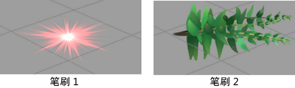
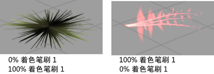

通过融合两个预设笔刷的管着色和形状属性，可以创建新的、有趣（有时非期望）的效果。
例如，假设您喜欢一个笔刷使用的着色，但是却喜欢另一个笔刷的形状。可以融合这两个笔刷，以使新的笔刷 100% 使用第一个笔刷的着色和另一个笔刷的形状。


若要获取更多有趣的效果，可以更改融合笔刷中使用的各个笔刷的着色和形状的百分比。
融合预设笔刷设置
- 选择要成为笔划基础的预设。“Paint Effects”复制预设笔刷设置到模板笔刷。
- 选择“生成 > 预设融合”(Generate > Preset Blending) >
 。此时将打开“笔刷预设融合”(Brush Preset Blend)窗口。
。此时将打开“笔刷预设融合”(Brush Preset Blend)窗口。 - 设定想要第一个笔划受所选择的下一个笔刷预设的“着色”(Shading)和“形状”(Shape)设置所影响的程度。
- 选择要与模板笔刷融合的笔刷预设。“Paint Effects”根据步骤 2 中定义的比例融合选定笔刷预设的变形值和着色值，然后将生成的设置复制到模板笔刷。
- 拖动以绘制笔划。
- 重复步骤 3 到步骤 5，直到获得所需效果。如果关闭该窗口，预设融合仍处于启用状态。若要禁用预设融合，请选择“生成 > 预设融合”(Generate > Preset Blending)（这将从菜单项中移除复选标记）。 注：
当“笔刷预设融合”(Brush Preset Blend)窗口处于打开状态时，每次选择一个笔刷预设，其着色值和变形值都将与模板笔刷的值融合。
提示：可以设定热键以启用和禁用笔刷预设融合（在“热键编辑器”(Hotkey editor)的“Paint Effects”下设定 BrushPresetBlend、BrushPresetBlendShading、BrushPresetBlendShape 和 BrushPresetReplaceShading）。按住“预设融合”(Preset Blend)热键以启用融合，选择预设笔刷和绘制，然后释放热键以禁用融合。